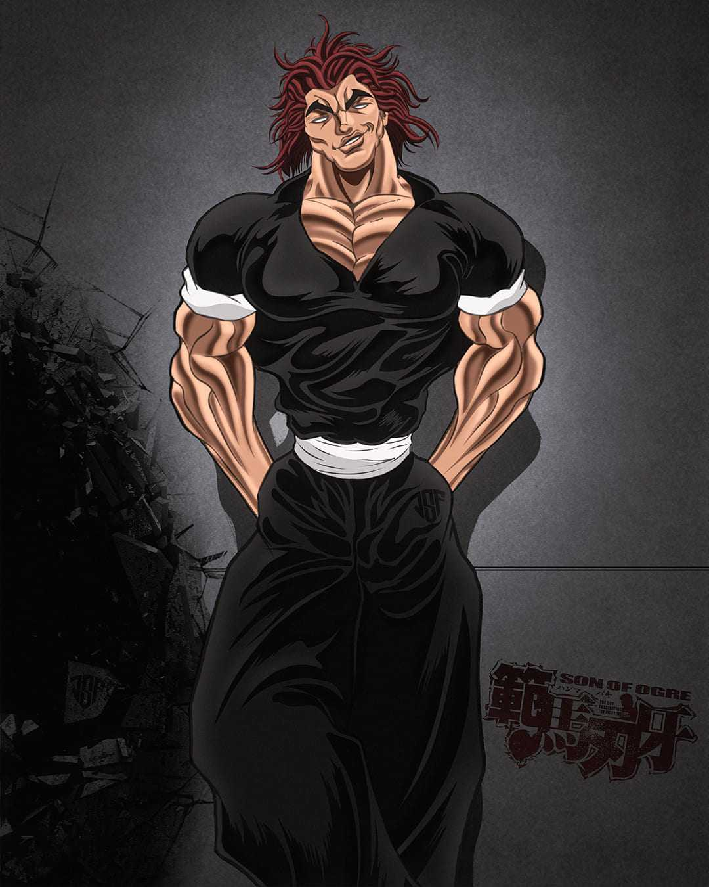

|  | BIOGRAFIA |
|---|---|
|
Yujiro Hanma, conhecido como a “Criatura Mais Forte da Terra”, é um lutador que alcançou força monstruosa
apenas através do treinamento absurdo e crueldade extrema. Sua habilidade física é tão grande que beira o
sobrenatural. Ele não luta por justiça ou honra — luta por prazer, domínio e para comprovar sua
superioridade absoluta sobre todos. É temido mundialmente como o ser humano mais perigoso vivo. | |
| ARMAS | |
|
Corpo Treinado ao Extremo: Cada músculo é afiado como uma arma mortal. Força e Técnica Absoluta: Yujiro não tem magia; ele é a personificação da força humana no nível máximo possível (e além). | |
| Habilidades | |
|
Golpes Mortais: Técnicas perfeitas capazes de destruir ossos com um toque. Reflexos Sobre-humanos: Reage mais rápido que atletas de elite, quase instantaneamente. Dominação Psicológica: Sua presença intimida e paralisa adversários. |